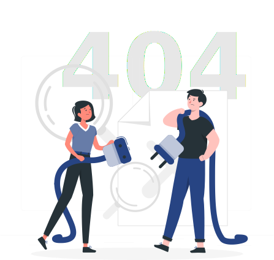

<section class="svg-container">
  <div class="svg-container__header">Oops! ..</div>
  
  <p>
    Unfortunately page not found!
  </p>
  <button class="svg-container__goback close" (click)="goback()">
    <!-- <i class="fas fa-long-arrow-alt-left"></i> -->
    Go back 
  </button>
</section>
